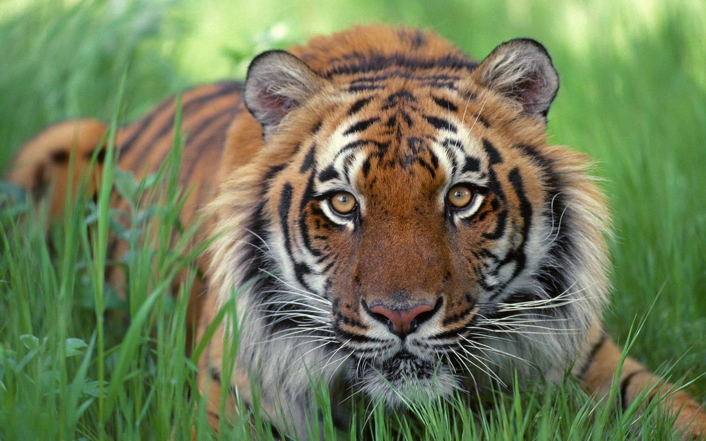

Sumatran tiger
Tigers are one of only two cats that like being in the water. The other is the South America’s jaguar.Each tiger has its own stripe pattern so you can tell an individual tiger by their unique stripes.
- Scientific Name: Panther Tigris Sumatra
- Average Length: 2.4 meters
- Average Lifespan: 15 to 20 years in the wild and up to 25 years in captivity.
- Habitat: : Indonesian island of Sumatra off the Malaysian Peninsula
The Sumatran tiger is one of the smallest tiger subspecies, and features a thick dark orange coat with thick black stripes. The Sumatran tiger is largely a solitary animal and they use their claws to scratch on trees to mark their territory. The female only uses her territory for hunting, they come out to hunt at dusk and they can travel more than 32 kilometer's in a night